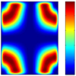

Rest material display
|

|
Display remaining rest material for visual analysis. → → → → |
2024 |
Display remaining rest material for visual analysis. A comparison of the pre-calculated current machining status with a workpiece is carried out and the differences are displayed. A current stock chain is required for this.
Color/rest material thickness
Color: Double-click with the left mouse button on the color field in the table to open the dialog for changing the color of the interval.
Rest material thickness: Double-click with the left mouse button on a table row to change a value of the interval limit.
Limits
Minimum rest material that is taken into account in the rest material display. Maximum rest material that is taken into account in the rest material display. Enter Min. and Max..
Example: Default values for color and rest material thickness
Tolerance
Model geometry: Value for the accuracy of the rest material display.
Update: Update the display of the rest material.
More options
Number of intervals: The rest material is displayed in five intervals. A higher value increases the fineness of the display.
Exact computation: Refine the calculation of the rest material display. The calculation is performed automatically in relation to the size of the workpiece.